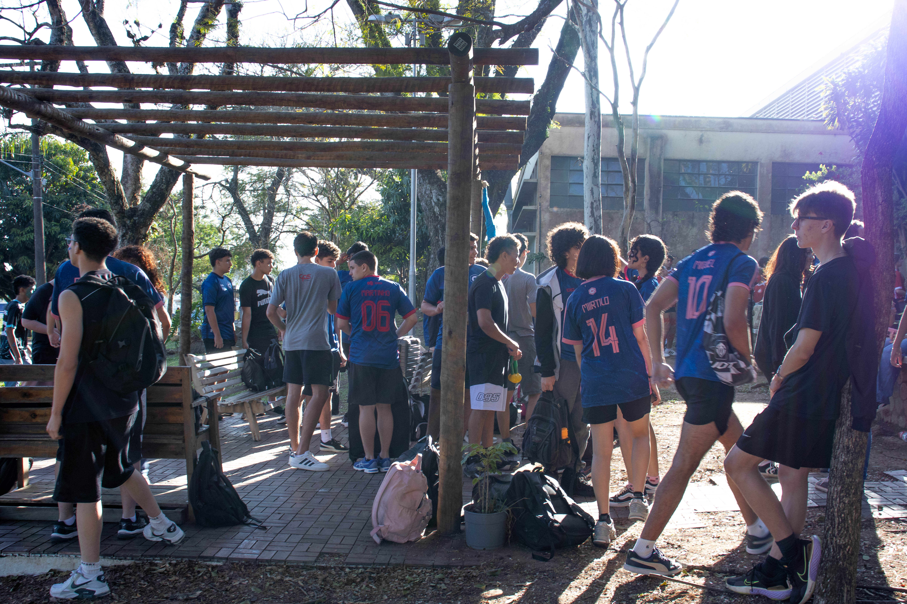
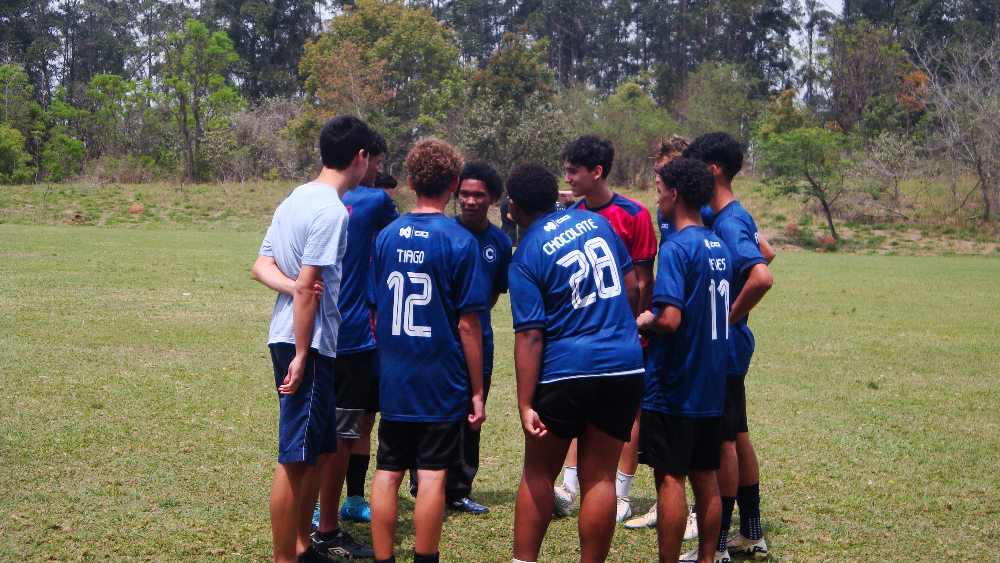
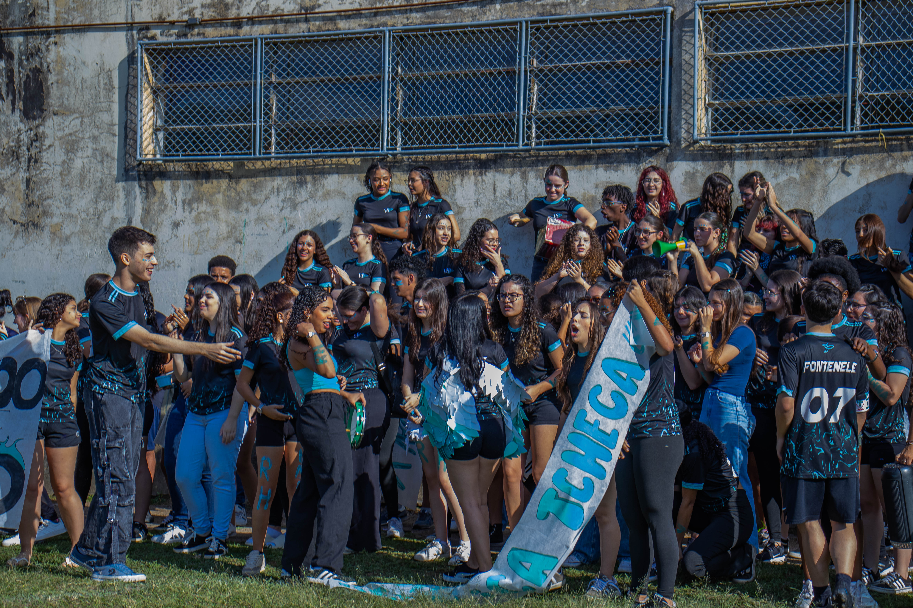
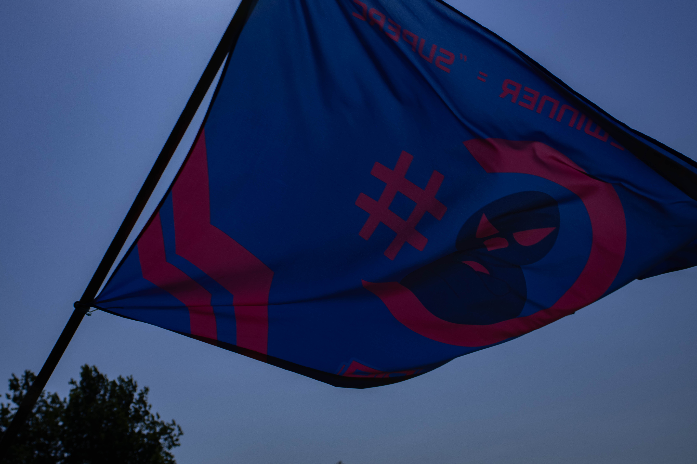
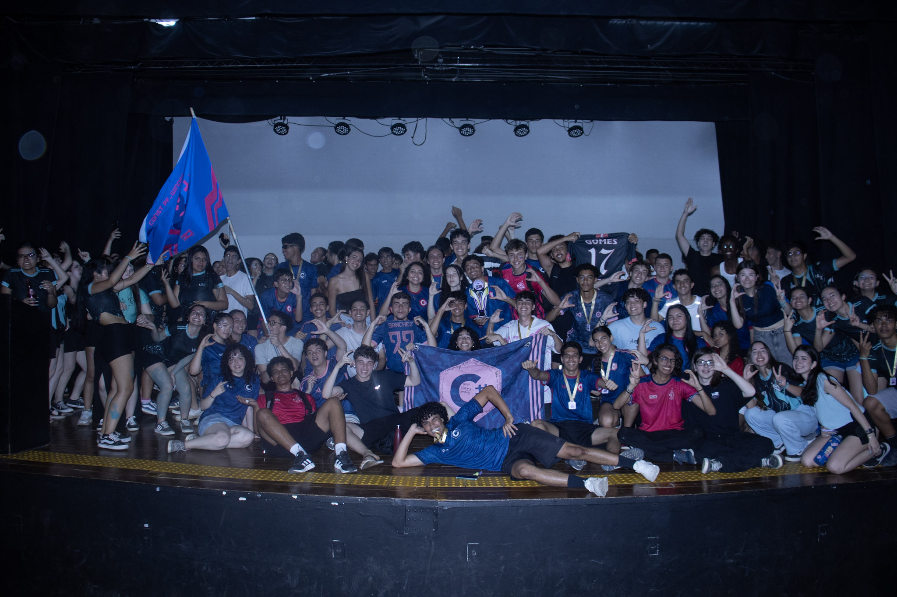

Um evento que celebra o pensamento crítico, a solidariedade e a educação transformadora.
Voltar para HomeA Semana Paulo Freire é um evento anual promovido nas escolas da rede pública e técnica para celebrar a vida e as ideias do educador Paulo Freire. O objetivo é incentivar o diálogo, a reflexão e o aprendizado crítico, mostrando que a educação pode ser um ato de liberdade e transformação social, sempre reforçando valores como a cidadania ativa e a valorização da educação. Durante a semana, buscando envolver todos os estudantes em atividades, é possível a formação de indivíduos engajados na construção de uma sociedade mais justa.
A Semana PF tem como propósito valorizar a educação como um ato transformador, inspirado nos princípios do educador que dá nome ao evento. Ao longo da semana, são criados, como já mencionamos, espaços de diálogo, troca de experiências e participação ativa dos alunos. As atividades propostas incentivam a consciência crítica, a cooperação e o respeito às diversidades, promovendo uma vivência escolar mais humana, democrática e significativa.


Os jogos presenciais são momentos de interação e diversão, onde os alunos participam de atividades no campo e nas quadras que promovem o trabalho em equipe, o respeito mútuo e o desenvolvimento de habilidades sociais. Os jogos realizados foram: basquete, futebol de campo, futsal feminino, futsal masculino, vôlei, handebol, ping pong solo e em duplas. Além disso, outros torneiros foram incluídos, como xadrez, dança das cadeiras, soletrando, cante uma música, mala e cuia, rouba bandeira, retrato de Paulo Freire, sala brilhante e queimada.

Os alunos também participam de campeonatos de jogos online, os quais foram: Clash Royale, Overwatch, Mortal Kombat, Brawhalla, Mario Kart, Rocket League, LOL, Valorant e Fifa. Esses jogos são uma alternativa oferecida para aqueles que não estão tão familizarizados com os esportes. Realizados durante a semana, eles são indispensáveis para o estímulo ao engajamento e a troca de saberes de forma dinâmica e acessível.

Uma das partes mais importantes da semana é a arrecadação de alimentos, roupas e materiais escolares, destinados a famílias em situação de vulnerabilidade. Realizada a partir da iniciativa solidária, seu objetivo é apoiar instituições e famílias em nossa comunidade. Com a colaboração de todos com alimentos, roupas, livros e materiais de limpeza, reafirmamos o compromisso social com a empatia e solidariedadee, além de o espírito de solidariedade que permeiam a obra de Paulo Freire.
O impacto dessa semana vai além dos jogos, fortalecendo a consciência crítica, o compromisso com a educação transformadora e o senso de pertencimento à comunidade escolar. Com um encerramento no anfiteatro, uma linda cerimônia, mesmo que breve e objetiva, foi o perfeito final para uma semana tão especial.
